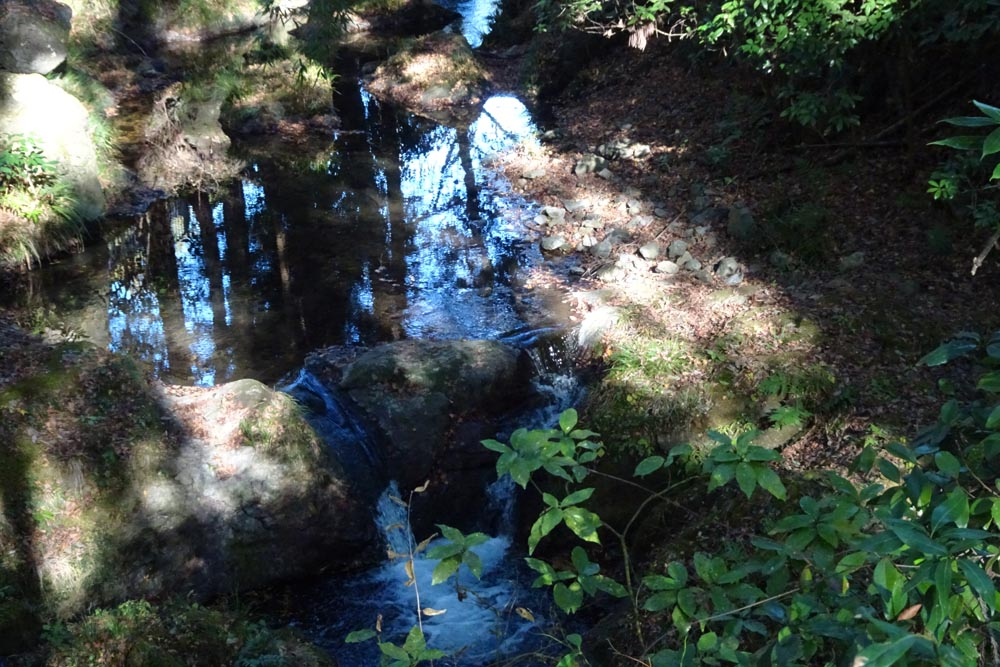

アイアランド: 幻想ピアノ三重奏曲
ブリッジと同年(1879年)生まれのアイアランドも何度かコベット・コンペティションに参加しており、これは1907年の第2回（テーマはピアノ三重奏によるPhantasy）で第3位を獲得した作品である。そのときの第1位はブリッジであった。とはいえ、個人的にはこちらの作品の方が好みだ。コンペティションの講評のようなものが見つからなかったので推測するしかないが、おそらくは過度に保守的な作風が評価を下げたのだろう。とはいえその若々しく甘い旋律が湧き出る様やダイレクトに感情を揺さぶってくる曲想はなかなか出会えない水準のものであり、聴いた後にすっきりと幸せな気分にさせてくれる素晴らしい作品だと思う。ヴァイオリンとチェロの歌い交わしは、まるでオペラの二重唱のようである。
John Ireland: Phantasie Trio in A Minor
Lydia Mordkovitch (vn)
Ian Brown (pf)
Karine Georgian (vc)
(1993)
この演奏はやや古い録音ではあるが残響が適度で特にヴァイオリンの艶のある響きが魅力的。歌い方も柔軟に曲に寄り添っている感じで好ましい。理想的な演奏だと思う。一緒に入っている2曲のヴァイオリンソナタ（第1番は1909年のコンペティションでめでたく第1位を獲っている）や、この曲を含む3曲のピアノトリオなども揃って聴きやすい作品である。

(Jan. 6, 2024)